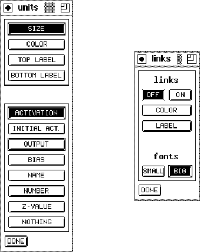
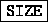
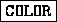
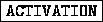
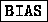
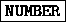

Figure: Unit Panel (left) and Link Panel (right)
With the unit panel the representation of the units can be set. The upper part shows the various properties that can be used to display the values:

: a value is represented by the color of the unit. A positive value is displayed green, a negative red. This option is available only on color terminals.
: a value is described by a string in the upper right corner of the unit.
: a value is described by a string in the lower right corner of the unit.In the lower part the type of the displayed value, selected by a button in the upper part, can be set. It is displayed by

: the output value of the unit.
: the number of the unit.
: no value.The options NAME, NUMBER and Z-value can be used only with the top or bottom label. The other values can be combined freely, so that four values can be displayed simultaneously.